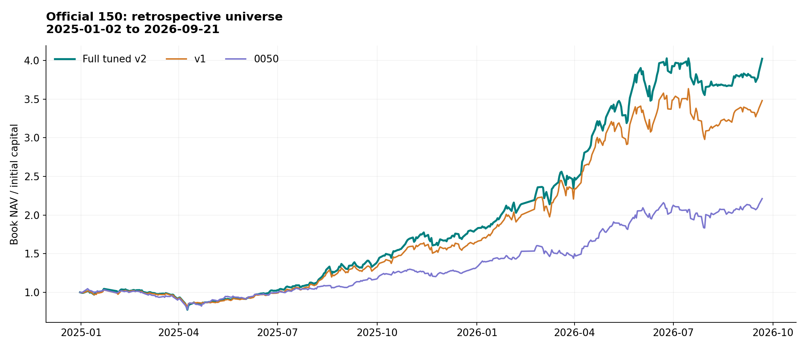
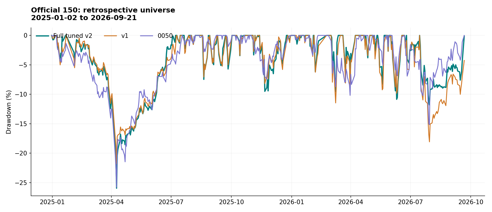
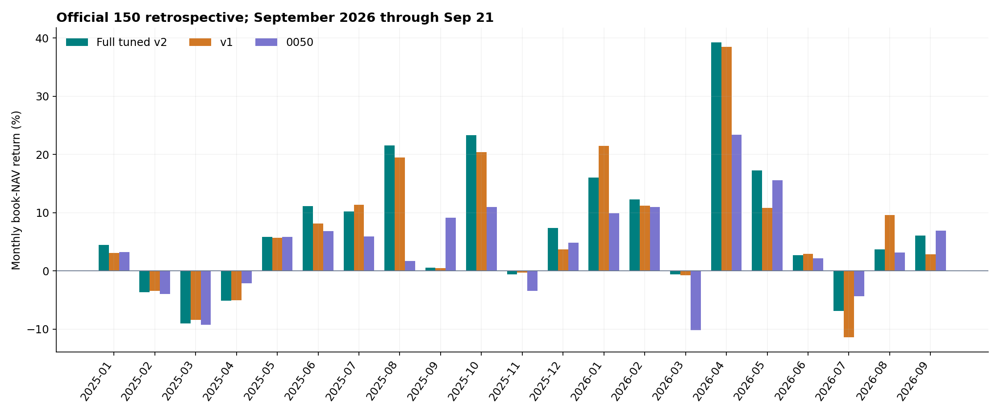
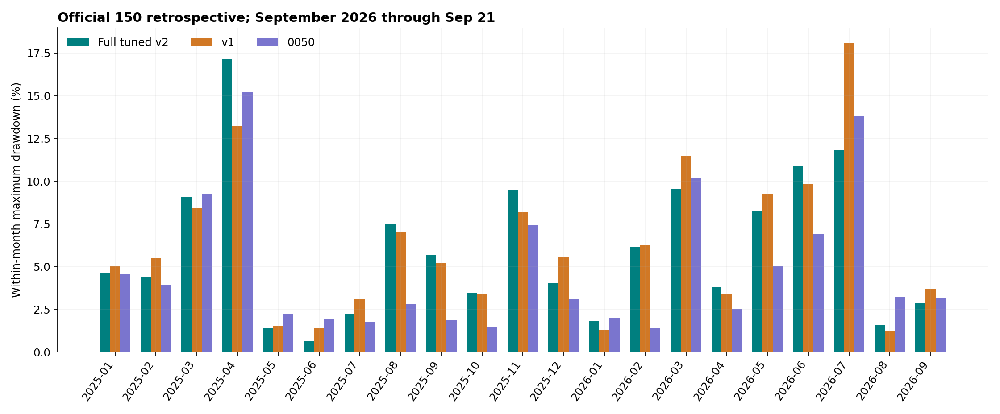
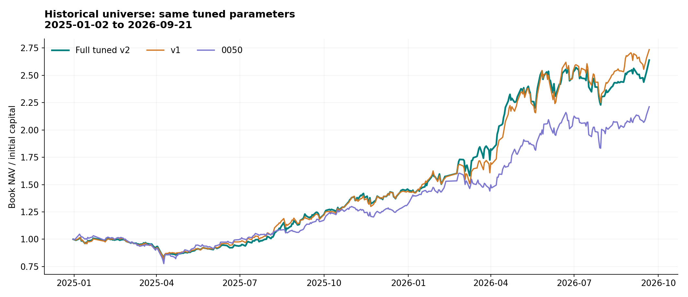
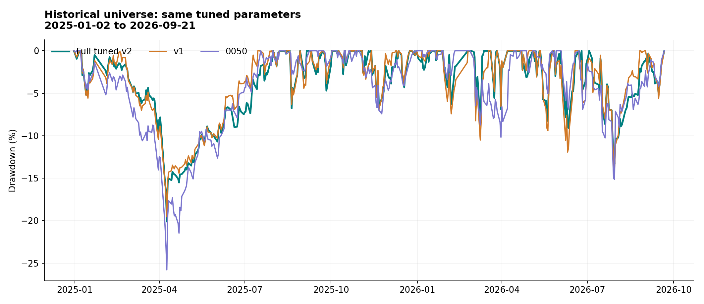
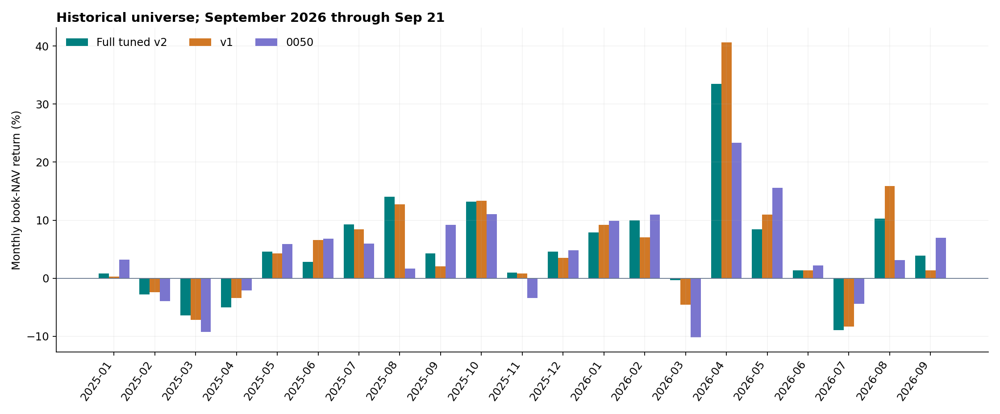
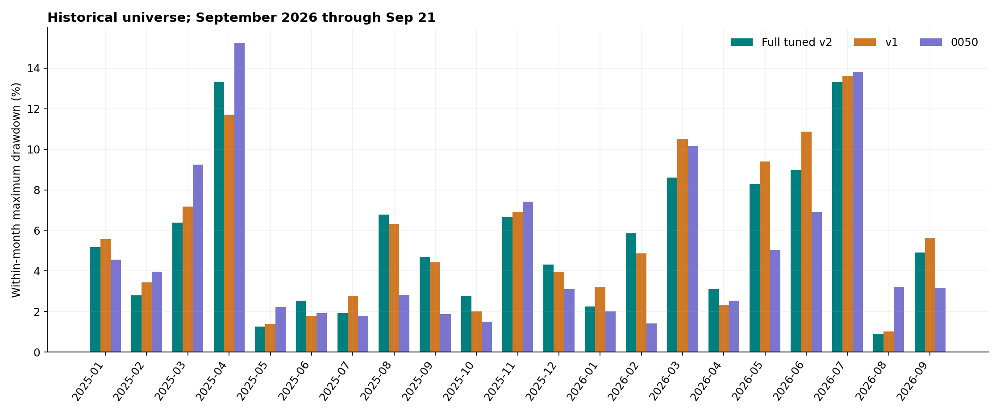
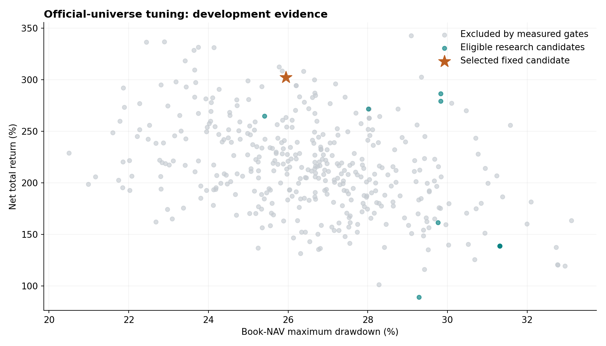

Full tuned v2：策略、調參與最終比較
本輪固定候選：f0019。正式 150 檔事後模擬淨報酬 302.35%，最大回撤 25.95%。
同參數在歷史股票池的報酬為 163.94%，回撤 20.10%；v1 對照為 173.54%／19.55%。請同時閱讀兩軌，不能只取正式事後池的高數字。v1 的已量測違規另列於表中。
期間為 2025-01-02 至 2026-09-21，共 417 個交易日。初始本金 10 億元，前日訊號決定股數，次日以官方成交均價撮合，已扣手續費與證交稅。
研究稽核通過，正式送件仍受證據門檻阻擋。 本輪沒有取得平台成功回執，也沒有把缺少的 Active Share 算法、歷史 ETF 權重與除權訂單語意當成已確認。這份報告不宣稱未來每筆成交必然合規。
固定策略程式 策略簡報 每日流程 全部 810 次結果 逐月數據 獨立稽核
讀數字前的三個口徑
主圖與主表採帳面 NAV。現金股利在期末一次加入，會使最後一個月帳面報酬跳升；CSV 另外列經濟 NAV 月報酬與回撤。9 月只到 21 日，不是完整月份。
月回撤由上月底 NAV 加上當月每日 NAV 計算；全期最大回撤則沿用全期最高點，兩者不能混用。
0050 是同本金、同費稅及價格預算的一次買入版本，初始預留現金，並非百分之百投資的官方總報酬指數。v1 未得到本輪相同調參預算，因此這裡只比較交付版本的結果。
正式 150 檔事後模擬
| 策略 |
總報酬 |
最大回撤 |
換手倍數 |
交易筆數 |
費稅／百萬元 |
已量測超限日 |
| Full tuned v2 |
302.35% |
25.95% |
25.88× |
1675 |
144.90 |
0 |
| v1 |
248.15% |
21.81% |
36.07× |
4776 |
195.35 |
7 |
| 0050 |
121.28% |
25.79% |
0.90× |
1 |
1.28 |
不適用 |
此池符合現在的競賽白名單，但其歷史成分來自 2026 年名單，不能解讀成 2025 年已知股票池。v1 有已量測違規，0050 也不是合規競賽組合；兩者只作固定研究對照。




展開全部月份：報酬與回撤
| 月份 |
Full tuned v2 報酬 |
Full tuned v2 回撤 |
v1 報酬 |
v1 回撤 |
0050 報酬 |
0050 回撤 |
| 2025-01 |
4.49% |
4.61% |
3.10% |
5.01% |
3.21% |
4.56% |
| 2025-02 |
-3.70% |
4.38% |
-3.47% |
5.49% |
-3.95% |
3.95% |
| 2025-03 |
-9.07% |
9.07% |
-8.40% |
8.40% |
-9.24% |
9.24% |
| 2025-04 |
-5.10% |
17.12% |
-5.04% |
13.23% |
-2.14% |
15.23% |
| 2025-05 |
5.86% |
1.41% |
5.65% |
1.51% |
5.87% |
2.22% |
| 2025-06 |
11.09% |
0.67% |
8.10% |
1.41% |
6.81% |
1.92% |
| 2025-07 |
10.19% |
2.23% |
11.37% |
3.07% |
5.94% |
1.78% |
| 2025-08 |
21.55% |
7.47% |
19.52% |
7.06% |
1.67% |
2.81% |
| 2025-09 |
0.56% |
5.70% |
0.46% |
5.23% |
9.17% |
1.88% |
| 2025-10 |
23.29% |
3.44% |
20.44% |
3.41% |
11.01% |
1.49% |
| 2025-11 |
-0.58% |
9.50% |
-0.31% |
8.17% |
-3.43% |
7.42% |
| 2025-12 |
7.39% |
4.04% |
3.72% |
5.55% |
4.80% |
3.10% |
| 2026-01 |
16.03% |
1.84% |
21.45% |
1.30% |
9.87% |
2.01% |
| 2026-02 |
12.31% |
6.16% |
11.19% |
6.26% |
10.97% |
1.41% |
| 2026-03 |
-0.60% |
9.55% |
-0.73% |
11.47% |
-10.18% |
10.18% |
| 2026-04 |
39.25% |
3.80% |
38.49% |
3.42% |
23.37% |
2.54% |
| 2026-05 |
17.23% |
8.27% |
10.82% |
9.24% |
15.55% |
5.05% |
| 2026-06 |
2.67% |
10.85% |
2.93% |
9.83% |
2.17% |
6.91% |
| 2026-07 |
-6.92% |
11.81% |
-11.42% |
18.08% |
-4.38% |
13.82% |
| 2026-08 |
3.69% |
1.60% |
9.56% |
1.19% |
3.14% |
3.21% |
| 2026-09 |
6.07% |
2.85% |
2.88% |
3.68% |
6.93% |
3.17% |
歷史股票池敏感度
| 策略 |
總報酬 |
最大回撤 |
換手倍數 |
交易筆數 |
費稅／百萬元 |
已量測超限日 |
| Full tuned v2 |
163.94% |
20.10% |
29.05× |
1787 |
122.73 |
0 |
| v1 |
173.54% |
19.55% |
34.20× |
4340 |
152.18 |
9 |
| 0050 |
121.28% |
25.79% |
0.90× |
1 |
1.28 |
不適用 |
這一軌使用同一組獲選參數，沒有重新挑冠軍。股票池以 2024 年底可重建資訊為準，但參數仍用已見期間開發，因此也不是未見測試。




展開全部月份：報酬與回撤
| 月份 |
Full tuned v2 報酬 |
Full tuned v2 回撤 |
v1 報酬 |
v1 回撤 |
0050 報酬 |
0050 回撤 |
| 2025-01 |
0.84% |
5.18% |
0.31% |
5.57% |
3.21% |
4.56% |
| 2025-02 |
-2.79% |
2.79% |
-2.42% |
3.44% |
-3.95% |
3.95% |
| 2025-03 |
-6.38% |
6.38% |
-7.17% |
7.17% |
-9.24% |
9.24% |
| 2025-04 |
-5.02% |
13.31% |
-3.38% |
11.71% |
-2.14% |
15.23% |
| 2025-05 |
4.58% |
1.25% |
4.27% |
1.39% |
5.87% |
2.22% |
| 2025-06 |
2.84% |
2.54% |
6.56% |
1.79% |
6.81% |
1.92% |
| 2025-07 |
9.29% |
1.93% |
8.47% |
2.76% |
5.94% |
1.78% |
| 2025-08 |
14.08% |
6.78% |
12.76% |
6.31% |
1.67% |
2.81% |
| 2025-09 |
4.30% |
4.70% |
2.02% |
4.41% |
9.17% |
1.88% |
| 2025-10 |
13.22% |
2.78% |
13.39% |
2.01% |
11.01% |
1.49% |
| 2025-11 |
0.99% |
6.67% |
0.84% |
6.91% |
-3.43% |
7.42% |
| 2025-12 |
4.62% |
4.31% |
3.51% |
3.97% |
4.80% |
3.10% |
| 2026-01 |
7.87% |
2.25% |
9.24% |
3.20% |
9.87% |
2.01% |
| 2026-02 |
9.98% |
5.85% |
7.07% |
4.87% |
10.97% |
1.41% |
| 2026-03 |
-0.31% |
8.61% |
-4.56% |
10.51% |
-10.18% |
10.18% |
| 2026-04 |
33.46% |
3.11% |
40.63% |
2.34% |
23.37% |
2.54% |
| 2026-05 |
8.40% |
8.28% |
10.94% |
9.39% |
15.55% |
5.05% |
| 2026-06 |
1.39% |
8.99% |
1.35% |
10.88% |
2.17% |
6.91% |
| 2026-07 |
-8.93% |
13.32% |
-8.35% |
13.62% |
-4.38% |
13.82% |
| 2026-08 |
10.27% |
0.90% |
15.88% |
1.02% |
3.14% |
3.21% |
| 2026-09 |
3.88% |
4.91% |
1.32% |
5.62% |
6.93% |
3.17% |
本輪調參完成度
| 股票池 |
完成 |
通過研究門檻 |
| 正式 150 檔事後模擬 |
405 |
11 |
| 歷史股票池敏感度 |
405 |
148 |
341 組探索加 64 組局部深化，兩池共 810 次。搜尋涵蓋 18 個設定、兩個 Sobol seed 與配對 4H 模式。這是明確範圍內的有界搜尋，不能稱全域最優。

先排除已量測硬超限、無有效方案或未成交的候選，再以正式池帳面淨報酬排序，以回撤及換手率破同分。歷史池全程使用同參數，沒有另挑最高收益。所有歷史都已參與開發，搜尋 seed 不是獨立市場樣本。
全部 11 個合格候選
| candidate_id |
phase |
total_return |
max_drawdown |
turnover_two_way |
no_valid_plan_days |
hold_without_envelope_days |
four_hour_mode |
| f0019 |
ofat |
302.35% |
25.95% |
25.88× |
0 |
0 |
coverage_only |
| l0055 |
local |
302.35% |
25.95% |
25.88× |
0 |
0 |
coverage_only |
| f0034 |
ofat |
286.50% |
29.83% |
24.94× |
0 |
0 |
coverage_only |
| l0035 |
local |
279.23% |
29.83% |
24.74× |
0 |
0 |
coverage_only |
| l0017 |
local |
271.68% |
28.01% |
24.19× |
0 |
0 |
coverage_only |
| l0032 |
local |
264.73% |
25.41% |
24.93× |
0 |
0 |
coverage_only |
| l0030 |
local |
161.57% |
29.76% |
15.18× |
0 |
0 |
strict |
| f0097 |
sobol |
138.72% |
31.32% |
14.27× |
0 |
0 |
strict |
| l0015 |
local |
138.72% |
31.32% |
14.27× |
0 |
0 |
strict |
| l0042 |
local |
138.72% |
31.32% |
14.27× |
0 |
0 |
strict |
| f0226 |
sobol |
88.99% |
29.28% |
11.32× |
0 |
0 |
coverage_only |
固定參數與交易策略
| 參數 |
固定值 |
| target_count |
20 |
| replacement_margin |
0.2 |
| max_replacements_per_day |
0 |
| volatility_spike_ratio |
2 |
| one_day_chase_return |
0.04 |
| volume_low |
0.2 |
| volume_high |
3 |
| four_hour_mode |
coverage_only |
| return_short |
10 |
| return_long |
30 |
| ema_fast |
10 |
| ema_slow |
30 |
| macd_fast |
8 |
| macd_slow |
21 |
| macd_signal |
5 |
| momentum_weight |
0.75 |
| long_return_fraction |
0.2 |
| cash_guard_ratio |
0.12 |
分數由短長期報酬百分位、量比百分位、MACD 方向、短期 EMA 趨勢與長期 EMA 趨勢組成。權重依序為 [0.6, 0.15, 0.1, 0.05, 0.05, 0.05]。進場還要通過暖機、慢 EMA、量比、追高及波動篩選。
跌破慢 EMA，或短期動能與 MACD 同弱，會提出退出。一般換股需超過分差門檻，並受每日替換數限制。保留股原則上不整體重配，只有規則修正可調整；0% 是策略現金目標，實際仍需保留費用與未知成交價預算。
本輪獲選組合的每日一般替換數為 0，因此排名分差門檻不生效。趨勢退出、現金及權重修正仍會交易；不能把「不按排名替換」解讀成低交易頻率。
strict 需要 4H 方向同意，coverage_only 只匹配可用資料與成熟條件，沒有 4H 多頭確認。長 EMA 100/200、4H 指標、暖機與量比／波動計算窗固定，Fibonacci、板塊與美股因子未加入本輪 A 核心。
獲選量比下限 0.2 位於本輪搜尋邊界，不能由此推斷範圍外更好或更差。最佳兩組的交易路徑相同，也不是兩次獨立市場支持。精確浮點設定保存在 JSON，表格採可讀的小數格式。
不可行日與每日工作流
| 股票池 |
重規劃日 |
修正成交日 |
驗證續抱日 |
僅當下通過 |
無有效方案日 |
| 正式 150 檔事後模擬 |
7 |
7 |
21 |
0 |
0 |
| 歷史股票池敏感度 |
9 |
9 |
9 |
0 |
0 |
規劃失敗時先擴充合法修正候選，再重驗續抱。表中「僅當下通過」代表上一日帳本合規，但不能覆蓋所有 ±10% 價格情境；不等於明日保證。持倉缺價不會被補造成新行情。正式流程另受官方帳本、AS、公司事件與回執限制。
每日先取得並核對官方帳本，再以固定參數更新訊號、產生 D-Plan 與委託。空單也產出完整報告。檔案、狀態、訊號、程式與設定保存雜湊，送件成功只能由日期／隊伍／檔案完全對應的官方回執認定。
買賣階段由前一日已接受的 D-Plan、前後已結算官方帳本及實際股數變化恢復。持有股票卻缺少可信前態時，不能每天重設成初始策略。日 K 必須在收盤後可得，小時 K 必須已完成；等價時區的重複資料也會被攔截。
被動超限依連續官方交易日與官方估值重算，缺日、缺估值或交易原因不明時不補造寬限。持股與現金不變只是保守的價格變動推論，不是主辦方原因認證。官方警告次數只接受官方欄位，缺失為 UNKNOWN，不能把本機違規或未知次數寫成官方零警告。
| 優先項目 |
本輪完成 |
外部缺口 |
| Active Share |
30 檔逐項覆蓋表、真實來源與日期 |
00980A 有明確日期權重；00982A 日期語意未定；28 檔未取得。完整算法待確認 |
| 官方帳本 |
傳輸來源、結算狀態及現金／股數核對 |
尚無正式登入及實際賽事帳本 |
| 提交回執 |
隊伍、日期、檔名、精確內容及接收狀態驗證 |
尚無平台成功回執，未啟用上傳 |
| 配股與零股 |
原股數保留、未確認事件阻擋、詢問稿 |
主辦方尚未回覆 SELL_ALL／除權委託語意 |
| 不可行日 |
重規劃與續抱重驗，固定候選兩池零無效方案 |
不保證未來每個市場日可行 |
| 自主紀錄 |
固定程式、原始資料、設定、決策與委託封存 |
不接受手工選股、改單或偽造模型呼叫 |
daily_auto 操作入口列出執行指令。官方證據狀態列出取得情況與待確認事項。常駐排程和正式送件尚未啟用，缺少介接規格不能自動填成成功。
證據、限制與採用判斷
採用固定候選作下一階段每日計畫的策略來源，保持正式提交 gate。較高開發期報酬只能說明這份資料中的結果；同期間多次選參數、正式池成分前視與公司事件假設都限制可外推性。新的未參與開發期間，才可提供真正向前驗證。
本輪凍結十份官方文件、來源資料、執行程式與搜尋設定。稽核檢查全部宣告測試的完整度、選參規則、固定候選重播、帳本與費稅、公式還原及刪除未來資料後的前綴一致性。完整證據見 audit.json 和 protocol。
研究固定股數在配股日可能不等於官方 SELL_ALL 的實際語意。相關交易不能憑帳務一致就認證；正式每日輸入有未確認公司行動時必須停止送件。AS 官方算法與完整資料、平台實際結算及接受狀態，同樣不能由回測推定。
正式池 full tuned v2 有 1 筆成交均價超出以前日收盤為基礎的 ±10% 預算範圍；實際帳本重算仍零已量測超限，但該範圍不是所有事件日的保證。除權與其他改變參考價的事件須使用當日官方契約。
容量依比賽全額成交規則不作淘汰條件。正式池仍有 98 筆超過當日日量的 10%，其中 11 筆超過全日量，最高 9.59 倍；這不是 10 億元實盤可完全成交的證據。